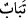

amellerini şeytan süslü gösterdi” (en-Neml 27/24) buyrulduğu da olmaktadır. Yalnız
bu tefsir Ehl-i sünnet’e göredir; Mutezile’ye göre ise, ameli süsleyen de yoldan çıkaran
da şeytandır.
Böylece “Firavun’un” kule yapmak ve âyetleri yalanlamaktaki “tuzağı tamâmen
boşa çıktı.” “
”, helak ve hasâr demek olup “boşa çıktı, yok olup gitti” anlamındadır.
et-Te’vîlâtü’n-Necmiyye’de der ki: Âyet-i kerîme, Firavun gibi Allah Teâlâ’nın gökte
bulunduğunu zannedenlerin, kendi zamanlarının firavunu olduğuna işâret etmektedir.
Allah Teâlâ’nın gökte olduğuna inanan birisiyle bir kâfir arasında sadece bu benzerlik
bulunsa, mezhebinin yamukluğu ve inancının yanlışlığı konusunda ona bu yeter. Çünkü
Firavun da Allah’ın gökte olduğunu vehmetmek suretiyle yanlışa düşmüştür. Allah gökte
olmuş olsaydı, Firavun da yukarıdaki talebinde haklı olurdu. “Böylece….” ifadesi de
onun, Allah’ın gökte olduğuna dâir inancının yanlış olduğuna ve doğru yoldan sırf bu
inancı yüzünden çevrilip menedildiğine delâlet etmektedir. Yâni Firavun’un, Allah’ı
gökte aramaya yönelik tuzağı, tamamen boşa çıkmış, hiçbir işe yaramamış ve yok olup
gitmiştir.
Hz. Peygamber (s.a.)’den şöyle buyurduğu rivâyet edilir: “Yüce Allah gözlerden uzak
ve perdeli olduğu gibi, basiretlerden de perdelidir. O en yüce topluluk (Mele-i Âlâ)
bile, Allah’ı sizlerin aradığı gibi aramaktadır.”[183] yâni gökte olmuş olsaydı,
göktekiler aramazdı. Yerde olmuş olsaydı yerdekiler aramazdı. Demek ki O, mekandan
münezzeh olma bakımından şu an da dâima olduğu hal üzere bulunmaktadır.
Hediyyetü’l-mehdiyyîn’de şöyle geçer: Kişi, “Allah göktedir” der ve bundan bizzat
mekân kasdederse ittifakla kâfir kabul edilir. Çünkü böyle bir şey, O’nu cisimli olarak
düşünmeyi gerektirir. Herhangi bir niyeti olmaksızın söylerse ulemânın çoğuna göre
kâfirdir. Ancak bu ifâdeyi nassların zâhirinden hikâye etmek suretiyle söylemişse tekfir
edilmez.
Muâviye b. Hakem Sülemî’nin (r.a) şöyle anlattığı nakledilir: Peygamber (s.a.)’in
yanına giderek: “Ya Rasûlallah!” dedim, “benim, koyunlarımı güden bir câriyem var.
Bir ara yanına gittiğimde baktım ki koyunlardan birini kaybetmiş. Koyuna ne olduğunu
sorunca, «kurt yedi» dedi. Bunun üzerine insanlık gereği kızdım ve tokatladım; yüzüne
ve ensesine bir şaplak patlattım. Şimdi (ödeşmek ve kendimi affettirmek için) kendisini
âzad edeyim mi?” Hz. Peygamber (s.a.) câriyeyi getirtip kendisine: “Söyle bakalım,
Allah nerede?” diye sordu, “Gökteee!” dedi. Peygamber (s.a.) de: “Peki ben kimim?”
deyince, “Sen Allah’ın Rasûlü’sün” cevabını verdi. Bunun üzerine Peygamber (s.a.):
“Onu âzâd et, o bir mümindir” buyurdu.[184]
Mâlûmunuz olsun ki, aklî deliller Cenab-ı Hakk’ın belli bir mekânda bulunmasının
imkansız olduğunu gösterir. İmdi Şâri (s.a.), söz konusu câriyenin, kendisini var eden
zâtı ancak kendi kafasında böyle bir tasavvurla aklîleştirebileceğini bildiği için, ona bu
şekilde hitap etmiştir. Şayet kendi nefsinde tasavvur edemeyeceği bir suretle hitap etmiş
olsaydı, istenen fayda ortadan kalkar yâni cariyenin Allah’ı kabul etmesi hasıl olmazdı.
Böyle bir câriyeye böyle bir ibareyle böyle bir soru sorması, Hz. Peygamber (s.a.)’in